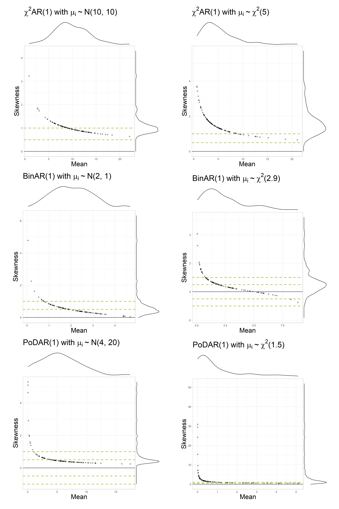

Skewness and staging: Does the floor effect induce bias in multilevel AR(1) models?
Reproducible codes
Introduction
This document contains the reproducible code for the manuscript Skewness and staging: Does the floor effect induce bias in multilevel AR(1) models? by M. M. Haqiqatkhah, O. Ryan, and E. L. Hamaker. please cite as:
…
In this study, we simulated multilevel data from three data generating mechanisms (DGMs), namely, the AR(1, \(\chi^2\)AR(1), BinAR(1), and PoDAR(1) models with different parameter sets.
For details, see the paper.
The simulation was conducted using the following modular pipeline design, inspired by Bien’s R package simulator (2016), consisting of the following components:
- Simulation: generating the datasets
- Analysis: modeling the data
- Harvesting: collecting the relevant parameter estimates
- Reporting: making tables and plots
And the components were placed in a pipeline, that managed:
- Making the simulation design matrix that include all relevant conditions
- Book-keeping data files belonging to each replication of each condition
- Performing simulations in batch
- Performing Analyses in batch
- Collecting the data in batch
This document is structured as follows. In Section 2, we explain the four components and the functions used therein. Then, in Section 3 we explain the wrapper functions used in the pipeline, and show how the pipeline was—and can be—executed. Then, in Section 3.4, we discuss how the harvested data was used to make the figures used in the paper (and others that were not included). Finally, in Section 4 we discuss how supplementary plots were made and how the empirical data analysis (on COGITO data) was done.
Before we begin, we need to read the scripts to include them in this document. By default, none of the scripts run here (as they are time consuming). To run the scripts of each component, you can change the following variables to TRUE and re-render the document:
In case you want to change the scripts (e.g., to run a smaller portion of the simulation, or try other parameters, etc.), you should look up the kintr parameters called in each chunk (with <<some_param>>) and find the corresponding code (under ## @knitr some_param) in the scripts folder.
Core components
The Simulation component
The Simulation component consists of three sets of functions:
- Functions that implement the DGMs and generate univariate (\(N=1\)) time series of length \(T\) from the parameters given to them;
- Wrappers that interface the DGM functions;
- A wrapper to generate datasets (consisting on \(N\) time series of length \(T\)) with a given DGM
Data-generating models specifications
First we define functions for each data-generating models (DGMs) that can produce univariate, single-subject (\(N=1\)) time series of desired length \(T\) (default: T = 100) with the two canonical parameters and a given random seed (default: seed = 0). All model(-implied) parameters are saved in a list (called pa).
For each model, the first observation (\(X_1\)) is randomly drawn from the model-implied marginal distribution, to eliminate the need for removing the burn-in window in the beginning of the data. After the data is generated, in case the argument only.ts is set to be TRUE, the raw data (as a vector of length T) is returned. Otherwise, the function calculates empirical dynamic (\(\phi\)) and marginal (\(\mu\), \(\sigma^2\), and \(\gamma\)) parameters based on the simulated data, and save it in a list (Empirical.Parameters). Furthermore, two \(\mathrm{\LaTeX{}}\)-ready strings (Model.Description and Model.Description.Short) are made which include a summary of the model parameters (that can be used, e.g., in plots). Finally, in case only.ts != TRUE, the function returns a list consisting of the time series (stored in x), verbal description of the dataset (Model.Description and Model.Description.Short), theoretical (i.e., model-implied) parameters (Model.Parameters), and empirical (i.e., sample) estimated parameters (Empirical.Parameters).
The canonical parameters of the AR(1) model with normally distributed residuals (which we referred to as NAR(1) in the simulation) are the autoregressive parameter \(\phi\) (default: phi = 0.4), mean \(\mu\) (default: Mean = 50), and the marginal variance \(\sigma^2\) (default: var.marginal = 4). Based on the marginal variance, the residual variance (var.resid) is calculated via \(\sigma^2_\epsilon = \sigma^2 (1 - \phi^2)\).
Construction
The time series is constructed by first generating a zero-centered time series \(\tilde X_t\) (x_cent). To do so, first the initial observation in the time series (x_cent[1]) is sampled from normal distribution with mean zero and a variance equal to the marginal variance of the model:
\[ \tilde X_1 \sim \mathcal{N}(0, \sigma^2) \]
Then, the remainder of the time series is generated using the definition of the AR(1) model (not that the here the residual variance is used in the normal distribution):
\[ \begin{aligned} \tilde X_{t} &= \phi \tilde X_{t-1} + \epsilon_{t} \\ \epsilon_{t} &\sim \mathcal{N}(0, {\sigma^2_{\epsilon}}) \end{aligned} \]
Finally, the mean is added to the centered zero-centered time series to reach the final time series with mean \(\mu\):
\[ X_t = \tilde X_t + \mu \]
Code
Click to expand the code
dgm_nar <- function(...){
pa <- list(...)
if(is.list(pa$pa)) pa <- pa$pa
## setting default seed if not given
if(is.null(pa$phi)) pa$phi <- 0.4
if(is.null(pa$Mean)) pa$Mean <- 50
if(is.null(pa$var.marginal)) pa$var.marginal <- 4
if(is.null(pa$var.resid)) pa$var.resid <- pa$var.marginal * (1 - pa$phi ^ 2)
if(is.null(pa$k)) pa$k <- 100
if(is.null(pa$T)) pa$T <- 100
if(is.null(pa$seed)) pa$seed <- 0
## Making sure var.marginal and var.resid are correctly related
pa$var.marginal <- pa$var.resid / (1 - pa$phi ^ 2)
### first make time series centered around zero
## drawing the first sample x_cent_1
set.seed(pa$seed)
x_cent <- rep(NA, pa$T)
x_cent[1] <- rnorm(n = 1,
mean = 0,
sd = sqrt(pa$var.marginal)
)
## making the rest of the centered time series
for (t in 2:pa$T){
x_cent[t] <- pa$phi*x_cent[t-1] + rnorm(n = 1,
mean = 0,
sd = sqrt(pa$var.resid)
)
}
## adding the mean to the centered time series
x <- x_cent + pa$Mean
## quick output of raw time series without book-keeping variables/parameters
if(!is.null(pa$only.ts))
if(pa$only.ts==TRUE) return(x)
Empirical.Parameters = list(Mean = mean(x),
Variance = var(x),
Skewness = moments::skewness(x),
AR = acf(x, lag.max = 1, plot = FALSE)$acf[2]
)
## making a LaTeX-ready list description of the model
Model.Description <- paste0("\\mu = ",
round(pa$Mean,2),
"(",
round(Empirical.Parameters$Mean,2),
")",
",\\; \\gamma = ",
0,
"(",
round(Empirical.Parameters$Skewness,2),
")",
",\\; \\phi = ",
round(pa$phi,2),
"(",
round(Empirical.Parameters$AR,2),
")",
",\\; \\sigma^2_{marginal} = ",
round(pa$var.marginal,2),
"(",
round(Empirical.Parameters$Variance,2),
")",
",\\; T = ",
pa$T,
"$")
Model.Description.Short <- paste0("$\\mu = ",
round(pa$Mean, 2),
",\\; \\sigma^2_{\\epsilon} = ",
round(pa$var.resid, 2),
",\\; \\phi = ",
round(pa$phi, 2),
"\\; \\rightarrow",
"\\; \\sigma^2 = ",
round(Empirical.Parameters$Variance,2),
",\\; \\gamma = ",
round(Empirical.Parameters$Skewness,2),
"$")
## making the output object
output <- list(x = x,
Model.Description = Model.Description,
Model.Description.Short = Model.Description.Short,
Model.Parameters = pa,
Empirical.Parameters = Empirical.Parameters)
return(output)
}The canonical parameters of the \(\chi^2\)AR(1) model (which we referred to as ChiAR(1) in the simulation) are the autoregressive parameter \(\phi\) (default: phi = 0.4), and degrees of freedom \(\nu\) (default: nu = 3). We set the intercept to zero (c = 0).1
Construction
Similar to the AR(1) model, we need to sample the first observation of the \(\chi^2\)AR(1) model from its marginal distribution. However, since this model does not have a closed-form marginal distribution, as an approximation, we instead sample x[1] from a \(\chi^2\) distribution with \(\nu\) degrees of freedom:
\[ X_1 \sim \chi^2(\nu) \]
Then, we generate the remainder of the time series using the definition of the \(\chi^2\)AR(1) model:
\[ \begin{aligned} X_{t} &= c + \phi X_{t-1} + a_{t} \\ a_{t} &\sim \chi^2(\nu). \end{aligned} \]
Code
Click to expand the code
dgm_chiar <- function(...){
pa <- list(...)
if(is.list(pa$pa)) pa <- pa$pa
## setting default seed if not given
if(is.null(pa$phi)) pa$phi <- 0.4
if(is.null(pa$nu)) pa$nu <- 3
if(is.null(pa$c)) pa$c <- 0
if(is.null(pa$k)) pa$k <- 100
if(is.null(pa$T)) pa$T <- 100
if(is.null(pa$seed)) pa$seed <- 0
## drawing the first sample x_1
set.seed(pa$seed)
x <- rep(NA, pa$T)
x[1] <- rchisq(n = 1,
df = pa$Mean)
## making the rest of the time series
for (t in 2:pa$T){
x[t] <- pa$c + pa$phi*x[t-1] + rchisq(n = 1,
df = pa$nu)
}
## quick output of raw time series without book-keeping variables/parameters
if(!is.null(pa$only.ts))
if(pa$only.ts==TRUE) return(x)
Empirical.Parameters = list(Mean = mean(x),
Variance = var(x),
Skewness = moments::skewness(x),
AR = acf(x, lag.max = 1, plot = FALSE)$acf[2]
)
## making a LaTeX-ready list description of the model
Model.Description <- paste0("$\\chi^2AR(1):", # \\; with",
"\\; \\mu = ",
round(pa$Mean,2),
"(",
round(Empirical.Parameters$Mean,2),
")",
",\\; \\gamma = ",
round(pa$Skewness,2),
"(",
round(Empirical.Parameters$Skewness,2),
")",
",\\; \\phi = ",
round(pa$phi,2),
"(",
round(Empirical.Parameters$AR,2),
")",
",\\; \\nu = ",
round(pa$nu,2),
",\\; c = ",
round(pa$c,3),
",\\; T = ",
pa$T,
"$")
Model.Description.Short <- paste0("$c = ",
round(pa$c,2),
",\\; \\nu = ",
round(pa$nu, 2),
",\\; \\phi = ",
round(pa$phi, 2),
"\\; \\rightarrow",
"\\; \\mu = ",
round(Empirical.Parameters$Mean, 2),
",\\; \\sigma^2 = ",
round(Empirical.Parameters$Variance,2),
",\\; \\gamma = ",
round(Empirical.Parameters$Skewness,2),
"$")
## making the output object
output <- list(x = x,
Model.Description = Model.Description,
Model.Description.Short = Model.Description.Short,
Model.Parameters = pa,
Empirical.Parameters = Empirical.Parameters)
return(output)
}The canonical parameters of the BinAR(1) model (which we referred to as BinAR(1) in the simulation) are the survival probability \(\alpha\) (default: alpha = 0.5) and the revival probability \(\beta\) (default: beta = 0.4). By default, the maximum value on scale \(k\) was set to k = 10.
Construction
We first calculate the \(\theta\) parameter, which characterizes the marginal distribution of the BinaR(1) model:
\[
\theta = \frac{k \beta}{1-(\alpha-\beta)}
\] Then we draw \(X_1\) (x[1]) from the marginal distribution of the model:
\[ X_1 \sim Binom(k, \theta) \]
The rest of time series is generated sequentially, for each time point \(t\), by drawing values for the number of survived (S_t[t]) and revived (R_t[t]) elements of the BinAR(1) model based on the previous observations (\(X_{t-1}\)), and then adding them:
\[ \begin{aligned} S_{t} &\sim Binom(X_{t-1}, \alpha) \\ R_t &\sim Binom(k -X_{t-1}, \beta) \\ X_{t} &= S_t + R_t \end{aligned} \]
Code
Click to expand the code
dgm_binar <- function(...){
pa <- list(...)
if(is.list(pa$pa)) pa <- pa$pa
## setting default seed if not given
if(is.null(pa$alpha)) pa$alpha <- 0.5
if(is.null(pa$beta)) pa$beta <- 0.4
if(is.null(pa$k)) pa$k <- 10
if(is.null(pa$T)) pa$T <- 100
if(is.null(pa$seed)) pa$seed <- 0
## making other parameters
pa$rho <- pa$alpha - pa$beta
pa$theta <- pa$beta/(1-pa$rho)
## drawing the first sample x_1
set.seed(pa$seed)
x <- rep(NA, pa$T)
x[1] <- rbinom(n = 1,
size = pa$k ,
prob = pa$theta)
## making the rest of the time series
for (t in 2:pa$T){
S_t <- rbinom(n = 1,
size = x[t-1],
prob = pa$alpha)
R_t <- rbinom(n = 1,
size = pa$k - x[t-1],
prob = pa$beta)
x[t] <- S_t + R_t
}
## quick output of raw time series without book-keeping variables/parameters
if(!is.null(pa$only.ts))
if(pa$only.ts==TRUE) return(x)
Empirical.Parameters = list(Mean = mean(x),
Variance = var(x),
Skewness = moments::skewness(x),
AR = acf(x, lag.max = 1, plot = FALSE)$acf[2]
)
## making a LaTeX-ready list description of the model
Model.Description <- paste0("$BinAR(1):",
"\\; \\mu = ",
round(pa$Mean,2),
"(",
round(Empirical.Parameters$Mean,2),
")",
",\\; \\gamma = ",
round(pa$Skewness,2),
"(",
round(Empirical.Parameters$Skewness,2),
")",
",\\; \\rho = ",
round(pa$rho,3),
"(",
round(Empirical.Parameters$AR,2),
")",
",\\; \\alpha = ",
round(pa$alpha,2),
",\\; \\beta = ",
round(pa$beta,2),
",\\; \\theta = ",
round(pa$theta,3),
",\\; T = ",
pa$T,
"$")
Model.Description.Short <- paste0("$k =",
round(pa$k,2),
",\\; \\alpha = ",
round(pa$alpha,2),
",\\; \\beta = ",
round(pa$beta,2),
"\\; \\rightarrow",
"\\; \\rho = ",
round(Empirical.Parameters$AR, 2),
",\\; \\mu = ",
round(Empirical.Parameters$Mean, 2),
",\\; \\sigma^2 = ",
round(Empirical.Parameters$Variance,2),
",\\; \\gamma = ",
round(Empirical.Parameters$Skewness,2),
"$")
## making the output object
output <- list(x = x,
Model.Description = Model.Description,
Model.Description.Short = Model.Description.Short,
Model.Parameters = pa,
Empirical.Parameters = Empirical.Parameters)
return(output)
}The canonical parameters of the PoDAR(1) model (which we referred to as PoDAR(1) in the simulation) are the persistence probability \(\tau\) (default: tau = 0.7) and the average rate \(\lambda\) (default: lambda = 0.5).
Construction
To generate the time series, we first draw the first observation \(X_1\) (x[1]) from a Poisson distribution with rate \(\lambda\):
\[ X_1 \sim Poisson(\lambda) \]
And generate the rest of the time series by first drawing \(Z_t\) from a Poisson distribution with rate \(\lambda\) and \(P_t\) from a binomial distribution with size probability of success \(\tau\) (that is equivalent to a Bernoulli distribution with probability \(\tau\)). Then, we calculate \(X_t\) based on the previous observation (x[t-1]) and values of \(Z_t\) (Z_t[t]) and \(P_t\) (P_t[t]), using the definition of the PoDAR(1) model:
\[ \begin{aligned} Z_t &\sim Poisson(\lambda) \\ P_t &\sim Binom(1, \tau) \\ X_t &= P_t X_{t-1} + (1-P_t) Z_t \end{aligned} \]
Code
Click to expand the code
dgm_podar <- function(...){
pa <- list(...)
if(is.list(pa$pa)) pa <- pa$pa
## setting default seed if not given
if(is.null(pa$tau)) pa$tau <- 0.7
if(is.null(pa$lambda)) pa$lambda <- 0.5
if(is.null(pa$k)) pa$k <- 6
if(is.null(pa$T)) pa$T <- 100
if(is.null(pa$seed)) pa$seed <- 0
## drawing the first sample x_1
set.seed(pa$seed)
x <- rep(NA, pa$T)
x[1] <- rpois(n = 1,
lambda = pa$lambda)
## making the rest of the time series
for (t in 2:pa$T){
V_t <- rbinom(n = 1,
size = 1,
prob = pa$tau)
Z_t <- rpois(n = 1,
lambda = pa$lambda)
x[t] <- V_t*x[t-1] + (1-V_t)*Z_t
}
## quick output of raw time series without book-keeping variables/parameters
if(!is.null(pa$only.ts))
if(pa$only.ts==TRUE) return(x)
Empirical.Parameters = list(Mean = mean(x),
Variance = var(x),
Skewness = moments::skewness(x),
AR = acf(x, lag.max = 1, plot = FALSE)$acf[2]
)
## making a LaTeX-ready list description of the model
Model.Description <- paste0("$PoDAR(1):",
"\\; \\mu = ",
round(pa$Mean,2),
"(",
round(Empirical.Parameters$Mean,2),
")",
",\\; \\gamma = ",
round(pa$Skewness,2),
"(",
round(Empirical.Parameters$Skewness,2),
")",
"\\; \\tau = ",
round(pa$tau,3),
"(",
round(Empirical.Parameters$AR,2),
")",
",\\; \\lambda = ",
round(pa$lambda,3),
",\\; T = ",
pa$T,
"$")
Model.Description.Short <- paste0("$\\lambda = ",
round(pa$lambda,3),
",\\; \\tau = ",
round(pa$tau, 2),
"\\; \\rightarrow",
"\\; \\rho = ",
round(Empirical.Parameters$AR, 2),
",\\; \\mu = ",
round(Empirical.Parameters$Mean, 2),
",\\; \\sigma^2 = ",
round(Empirical.Parameters$Variance,2),
",\\; \\gamma = ",
round(Empirical.Parameters$Skewness,2),
"$")
## making the output object
output <- list(x = x,
Model.Description = Model.Description,
Model.Description.Short = Model.Description.Short,
Model.Parameters = pa,
Empirical.Parameters = Empirical.Parameters)
return(output)
}
# General DGM wrappers ----------------------------------------------------General DGM wrappers
Given that, in each model, two canonical parameters characterize the dynamic and marginal features of the generated time series, and given that we have analytic formulas that link the canonical parameters to the model-implied \(\phi\), \(\mu\), \(\sigma^2\), and \(\gamma\), we use a function (dgm_parameterizer) to calculate canonical parameters from two given parameters, and make a complete list of parameters (called pa). This list also includes non-parameter variables, importantly, the time series length \(T\) (saved in pa$T) and the random seed used in the dgm_* functions (saved in pa$seed). A wrapper function (dgm_generator) is used as an interface to all dgm_* functions, which first makes sure the given parameters are sufficient for data generation, makes a complete parameter list pa with the help of dgm_parameterizer, and passes pa to the respective DGM generating function.
The function dgm_parameterizer calculates canonical/model-implied parameters of a given DGM (specified using the Model argument) based on the parameters given to it as arguments, and saves them in a list of parameters (pa), which s returned by the function. The function makes sure that the set of parameters provided are sufficient to characterize the dynamic parameter of the model (i.e., the autoregression \(\phi\)) and at least one of the marginal parameters (importantly, the mean \(\mu\)) but giving default values to some parameters.
Click to expand the code
dgm_parameterizer <- function(...){
pa <- list(...)
if(is.list(pa$pa)) pa <- pa$pa
if(is.null(pa$Model)) pa$Model <- "ChiAR(1)"
if(is.null(pa$phi)) pa$phi <- 0.2
## %%%%%%%%%%%%
## for NAR(1)
## %%%%%%%%%%%%
if(tolower(pa$Model) == "nar(1)" | tolower(pa$Model) == "nar"){
if(is.null(pa$k)) pa$k <- 100
## Calculating model parameters
## if mean is given
if (!is.null(pa$Mean)) {
# then from the mean formula
pa$c <- pa$Mean * (1 - pa$phi)
}
## if mean is not given, we get it from the intercept
else{
# set intercept to zero, if already not defined
if(is.null(pa$c)) pa$c <- 0
# then from the mean formula
pa$Mean <- pa$c / (1 - pa$phi)
}
## Now we certainly have the mean calculated
## The within-person (marginal) variance is more interpretable. So
## we always calculate the residual variance based on the marginal
## variance, unless var.resid is known BUT var.marginal is NOT.
if (!is.null(pa$var.resid) & is.null(pa$var.marginal)) {
# from the marginal variance formula
pa$var.marginal <- pa$var.resid / (1 - pa$phi ^ 2)
}
## If none of them are known we first give var.marginal a default
## value and calculate var.resid based on that.
if (is.null(pa$var.resid) & is.null(pa$var.marginal)) {
# we set a default value for the marginal variance
pa$var.marginal <- 4
}
## Then, we calculate var.resid (again) with var.marginal to make
## sure that the marginal variance had been given more importance
pa$var.resid <- pa$var.marginal * (1 - pa$phi ^ 2)
## Returning the parameter list
return(pa)
}
## %%%%%%%%%%%%
## for ChiAR(1)
## %%%%%%%%%%%%
if(tolower(pa$Model) == "chiar(1)" | tolower(pa$Model) == "chiar" |
tolower(pa$Model) == "chi2ar(1)" | tolower(pa$Model) == "chi2ar"){
if(is.null(pa$k)) pa$k <- 100
## Calculating model parameters
## if mean and skewness are given
if (!is.null(pa$Mean) & !is.null(pa$Skewness)) {
# from the skewness formula
pa$nu <-
8 * (1 - pa$phi ^ 2) ^ 3 / ((pa$Skewness ^ 2) * (1 - pa$phi ^
3) ^ 2)
# then from the mean formula
pa$c <- pa$Mean * (1 - pa$phi) - pa$nu
# returning the parameter list
return(pa)
}
## if mean and skewness are not given at the same time, we use c
## and one other parameter
else{
# set intercept to zero, if already not defined
if(is.null(pa$c)) pa$c <- 0
## if mean is given
if (!is.null(pa$Mean)) {
# then from the mean formula
pa$nu <- pa$Mean * (1 - pa$phi) - pa$c
# from the skewness formula
pa$Skewness <-
2 * (1 - pa$phi ^ 2) ^ 1.5 / (sqrt(pa$nu / 2) * (1 - pa$phi ^
3))
# returning the parameter list
return(pa)
}
## if skewness is given
if (!is.null(pa$Skewness)) {
# from the skewness formula
pa$nu <-
8 * (1 - pa$phi ^ 2) ^ 3 / ((pa$Skewness ^ 2) * (1 - pa$phi ^
3) ^ 2)
# then from the mean formula
pa$Mean <- (pa$c + pa$nu) / (1 - pa$phi)
# returning the parameter list
return(pa)
}
## if nu is given
if(!is.null(pa$nu)){
# from the mean formula
pa$Mean <- (pa$c + pa$nu)/(1-pa$phi)
# from the skewness formula
pa$Skewness <-
2 * (1 - pa$phi ^ 2) ^ 1.5 / (sqrt(pa$nu / 2) * (1 - pa$phi ^
3))
# returning the parameter list
return(pa)
}
}
}
## %%%%%%%%%%%%
## for BinAR(1)
## %%%%%%%%%%%%
if (tolower(pa$Model) == "binar(1)" | tolower(pa$Model) == "binar") {
if (is.null(pa$k))
pa$k <- 10
## Calculating model parameters
## if mean is given
if (!is.null(pa$Mean)) {
# from skewness formula: m = k*theta
pa$theta <- pa$Mean / pa$k
## we then calculate skewness based on theta
pa$Skewness <- (1 - 2 * pa$theta) / sqrt(pa$k * pa$theta * (1 - pa$theta))
## we then calculate beta based on theta and phi
pa$beta <- pa$theta * (1 - pa$phi)
# then we calculate alpha
pa$alpha <- pa$phi + pa$beta
# finally we calculate k*beta, which is equivalent to c
pa$c <- pa$k * pa$beta
# returning the parameter list
return(pa)
}
## if skewness is given
if (!is.null(pa$Skewness)) {
# from skewness formula: skewness = (1-2*theta)/sqrt(k*theta*(1-theta))
# it is easier to write with ks = k*(skewness^2)
ks <- pa$k*pa$Skewness^2
pa$theta <- (ks + 4 -
sqrt(ks * (ks + 4))) / (2 * ks + 8)
# The above formula only gives theta < 0.5, thus for negative skewness
# we must use 1-theta instead
if(pa$Skewness < 0) pa$theta <- 1 - pa$theta
# we then calculate mean based on theta
pa$Mean <- pa$k * pa$theta
# we then calculate beta based on theta and phi
pa$beta <- pa$theta * (1 - pa$phi)
# then we calculate alpha
pa$alpha <- pa$phi + pa$beta
# finally we calculate k*beta, which is equivalent to c
pa$c <- pa$k * pa$beta
# returning the parameter list
return(pa)
}
## if theta is given
if (!is.null(pa$theta)) {
# from theta formula
pa$beta <- pa$theta * (1 - pa$phi)
# from beta formula
pa$alpha <- pa$phi + pa$beta
# we then calculate mean based on theta
pa$Mean <- pa$k * pa$theta
# we then calculate skewness based on theta
pa$Skewness <- (1 - 2 * pa$theta) / sqrt(pa$k * pa$theta * (1 - pa$theta))
# finally we calculate k*beta, which is equivalent to c
pa$c <- pa$k * pa$beta
# returning the parameter list
return(pa)
}
## if alpha is given
if (!is.null(pa$alpha)) {
# from beta formula
pa$beta <- pa$alpha - pa$phi
# from theta formula
pa$theta <- pa$beta / (1 - pa$phi)
# we then calculate mean based on theta
pa$Mean <- pa$k * pa$theta
# we then calculate skewness based on theta
pa$Skewness <- (1 - 2 * pa$theta) / sqrt(pa$k * pa$theta * (1 - pa$theta))
# finally we calculate k*beta, which is equivalent to c
pa$c <- pa$k * pa$beta
# returning the parameter list
return(pa)
}
## if beta is given
if (!is.null(pa$beta)) {
# from beta formula
pa$alpha <- pa$phi + pa$beta
# from theta formula
pa$theta <- pa$beta / (1 - pa$phi)
# we then calculate mean based on theta
pa$Mean <- pa$k * pa$theta
# we then calculate skewness based on theta
pa$Skewness <- (1 - 2 * pa$theta) / sqrt(pa$k * pa$theta * (1 - pa$theta))
# finally we calculate k*beta, which is equivalent to c
pa$c <- pa$k * pa$beta
# returning the parameter list
return(pa)
}
## if intercept given
if (!is.null(pa$c)) {
# from intercept formula c = k*beta
pa$beta <- pa$c / pa$k
# from beta formula
pa$alpha <- pa$phi + pa$beta
# from theta formula
pa$theta <- pa$beta / (1 - pa$phi)
# we then calculate mean based on theta
pa$Mean <- pa$k * pa$theta
# we then calculate skewness based on theta
pa$Skewness <- (1 - 2 * pa$theta) / sqrt(pa$k * pa$theta * (1 - pa$theta))
# returning the parameter list
return(pa)
}
}
## %%%%%%%%%%%%
## for PoDAR(1)
## %%%%%%%%%%%%
if (tolower(pa$Model) == "podar(1)" | tolower(pa$Model) == "podar") {
if (is.null(pa$k))
pa$k <- 50
# phi and tau are the same, then if tau is defined, it overrules phi
if(!is.null(pa$tau)) pa$phi <- pa$tau
# and if tau is not defined, then tau will get the value of phi
if(is.null(pa$tau)) pa$tau <- pa$phi
# DAR(1) intercept is zero
pa$c <- 0
## Calculating model parameters
## if mean is given
if (!is.null(pa$Mean)) {
# mean of Poisson is lambda
pa$lambda <- pa$Mean
## we then calculate skewness based on lambda
pa$Skewness <- pa$lambda^(-0.5)
# returning the parameter list
return(pa)
}
## if skewness is given
if (!is.null(pa$Skewness)) {
# from skewness formula: skewness = 1/sqrt(lambda)
pa$lambda <- pa$Skewness^(-2)
# we then calculate mean based on theta
pa$Mean <- pa$lambda
# returning the parameter list
return(pa)
}
## if lambda is given
if (!is.null(pa$lambda)) {
# mean of Poisson is lambda
pa$Mean <- pa$lambda
## we then calculate skewness based on lambda
pa$Skewness <- pa$lambda^(-0.5)
# returning the parameter list
return(pa)
}
}
}The function dgm_generator gets a set of parameters (either as separate arguments, or a list of parameters, like the one returned by dgm_parameterizer), saves them in a list called pa. It checks whether \(\phi\) is included in the list (if not, sets the default value pa$phi = 0.2), and checks if at least one other parameter (which, together with \(\phi\), is required to characterize the marginal properties of the DGMs) is calculated for it (if not, it sets the default value pa$Mean = 5 for \(\mu\)). Furthermore, if the DGM name, time series length, and the random seed are not provided, it gives them default values (respectively: Model = "ChiAR(1)", T = 100, and seed = 0) and adds them to pa.
Then, it passes the pa list to dgm_parameterizer to do the necessary conversions to complete the list of canonical and model-implied parameters. Finally, given the model name, it checks if non-canonical parameters \(k\) and \(c\) are set (otherwise assigns appropriate defaults to them), and passes the complete parameter list to the respective DGM function.
Click to expand the code
dgm_generator <- function(...){
pa <- list(...)
if(is.list(pa$pa)) pa <- pa$pa
## setting default seed if not given
if(is.null(pa$Model)) pa$Model <- "ChiAR(1)"
if(is.null(pa$phi)) pa$phi <- 0.2
# if no model parameter is given, then mean is set to a default 5
if (is.null(pa$Mean) &
is.null(pa$Skewness) &
is.null(pa$c) &
is.null(pa$nu) &
is.null(pa$alpha) &
is.null(pa$beta) &
is.null(pa$theta)
) pa$Mean <- 5
# if(is.null(pa$Mean)) pa$Variance <- 10
# if(is.null(pa$Skewness)) pa$Skewness <- 3
if(is.null(pa$T)) pa$T <- 100
if(is.null(pa$seed)) pa$seed <- 0
if(is.null(pa$only.ts)) pa$only.ts <- FALSE
## If you set `pa$only.ts` parameter as TRUE, the dgm_ functions produce only
## the raw time series (a single numeric vector) which is way lighter and way
## faster:
# pa$only.ts <- TRUE
## calculating model parameters
pa <- dgm_parameterizer(pa = pa)
### making models
## %%%%%%%%%%%%
## NAR(1)
## %%%%%%%%%%%%
if(tolower(pa$Model) == "nar(1)" | tolower(pa$Model) == "nar"){
# default maximum scale value
if(is.null(pa$k)) pa$k <- 100
## %% Generating the data
o <- dgm_nar(pa = pa)
}
## %%%%%%%%%%%%
## ChiAR(1)
## %%%%%%%%%%%%
if(tolower(pa$Model) == "chiar(1)" | tolower(pa$Model) == "chiar" |
tolower(pa$Model) == "chi2ar(1)" | tolower(pa$Model) == "chi2ar"){
# default maximum scale value
if(is.null(pa$k)) pa$k <- 100
## %% Generating the data
o <- dgm_chiar(pa = pa)
}
## %%%%%%%%%%%%
## BinAR(1)
## %%%%%%%%%%%%
if(tolower(pa$Model) == "binar(1)" | tolower(pa$Model) == "binar"){
# default maximum scale value
if(is.null(pa$k)) pa$k <- 10
## %% Generating the data
o <- dgm_binar(pa = pa)
}
## %%%%%%%%%%%%
## DAR(1)
## %%%%%%%%%%%%
if(tolower(pa$Model) == "dar(1)" | tolower(pa$Model) == "dar"){
# default maximum scale value
if(is.null(pa$k)) pa$k <- 10
## %% Generating the data
o <- dgm_dar(pa = pa)
}
## %%%%%%%%%%%%
## PoDAR(1)
## %%%%%%%%%%%%
if(tolower(pa$Model) == "podar(1)" | tolower(pa$Model) == "podar"){
# default maximum scale value
if(is.null(pa$k)) pa$k <- 100
## %% Generating the data
o <- dgm_podar(pa = pa)
}
## Also allow a data frame output
# if(!is.null(p$as.dataframe) & p$as.dataframe){
#
# }
return(o)
}
# Dataset generation ------------------------------------------------------Dataset generation
The machinery described above can be used to generate individual (\(N=1\)) time series. However, for the simulation study, we need datasets comprising of multiple (\(N=25, 50, 100\)) individuals. As we discussed in the paper, in our study, all individuals in a dataset of a DGM share the same autoregressive parameter (\(\phi_i=0.4\)) and the individual differences are only in the individual means (\(\mathbb{\mu} = [\mu_1 , \mu_2, \dots, \mu_N]\)). Thus, we write a function (dgm_make.sample) that can generate, for each DGM, a dataset of \(N\) individuals based on an \(N\)-dimensional vector of individual means, all with the same \(\phi_i\). We then need to find the appropriate parameters for the level-2 distributions (Gaussian and \(\chi^2\) distributions) for each DGM, such that the we get a considerable proportion of individuals with considerably high skewness while respecting the lower and upper bounds of values supported by each model. Finally, with a wrapper function (make_datasets), we facilitate making dataset by automatically generating the means vector suitable for each DGM.
The function dgm_make.sample generates a dataset of time series of length T with the autoregressive parameter phi from a desired DGM (determined by the Model argument) given a vector of means (passed as the argument Means). The length of Means determine the number of individuals in the dataset (N <- length(Means)). If Means is not provided, a randomly generated vector of \(N = 100\) is used as default. Since each individual time series is generated with a random seed, we need a vector of N unique seeds, which can be provided using the seeds argument. In case seeds is not provided, it is generated based on the provided means (seeds.from.means), and if it is a scalar, the seeds vector is created by adding the scalar to the seeds.from.means (which would allow generating different datasets with the same mean distributions).
Click to expand the code
dgm_make.sample <- function(Model = "ChiAR(1)",
Means = rnorm(100, 5, 3),
T = 100,
phi = 0.4,
seeds = NULL
){
N <- length(Means)
seeds.from.means <- 1000*N*Means
if(is.null(seeds)) seeds <- seeds.from.means
if(length(seeds)<=1) seeds <- seeds + seeds.from.means
df <- data.frame(subject = rep(1:N, each = T),
t = rep(1:T, times = N),
x = rep(NA, N*T))
for(s in 1:N){
x <- dgm_generator(
Model = Model,
only.ts = TRUE,
T = T,
phi = phi,
Mean = Means[s],
seed = seeds[s])
df$x[((s-1)*T + 1):(s*T)] <- x
}
return(df)
}For each alternative DGM—the \(\chi^2\)AR(1), BinAR(1), and PoDAR(1) models—we should determine appropriate parameters for the level-2 distribution of means such that we have enough skewness in the generated datasets. To do so, we make a function (Mean.vs.Skewness) to help us experiment with different values for \(\mu\) and \(\sigma^2\) (of the Gaussian level-2 distribution) and \(\nu\) (of the \(\chi^2\) level-2 distribution) for each alternative DGM. Note that we start by generating more than enough samples for each distribution (\(10 \times N\)) and subsample \(N\) values after applying the model-specific lower and upper bounds.
We notice that we get the desired distribution of skewness with the following parameters:
| Model | \(\mu\) | \(\sigma^2\) | \(\nu\) |
|---|---|---|---|
| \(\chi^2\)AR(1) | 10 | 10 | 5 |
| BinAR(1) | 2 | 1 | 2.9 |
| PoDAR(1) | 4 | 4 | 1.5 |
Giving us the following distributions:

We then use a wrapper (make_datasets) around dgm_make.sample that generates datasets for all four DGMs with the appropriate level-2 parameters specified above. Note that here we first generate more than enough (i.e., \(2 \times N\)) samples of means to make sure we end up with \(N\) samples after applying the upper and lower bounds. The datasets are then saved, with some additional variables in separate .rds files, using wrapper functions described in Section 3.2.
Click to expand the code
make_datasets <- function(Model = "DAR",
T = 100,
N = 100,
phi = 0.4,
l2.distribution = "Gaussian",
uSeed = 0) {
# save global seed of the global env and set it back before leaving
seed.old <- .Random.seed
on.exit({
.Random.seed <<- seed.old
})
set.seed(uSeed)
if (tolower(Model) == "nar") {
model.name <- "NAR"
lower_bound <- 0
upper_bound <- 100
lev2.Mean <- 50
lev2.Variance <- 4
chi2.df <- 2
}
if (tolower(Model) == "chiar" | tolower(Model) == "chi2ar") {
model.name <- "Chi2AR"
lower_bound <- 0
upper_bound <- 100
lev2.Mean <- 10
lev2.Variance <- 10
chi2.df <- 5
}
if (tolower(Model) == "binar") {
model.name <- "BinAR"
lower_bound <- 0
upper_bound <- k
lev2.Mean <- 2
lev2.Variance <- 1
chi2.df <- 2.9
}
if (tolower(Model) == "podar") {
model.name <- "PoDAR"
lower_bound <- 0
upper_bound <- 100
lev2.Mean <- 4
lev2.Variance <- 4
chi2.df <- 1.5
}
# sampling within-person mean from level 2 distribution
if (l2.distribution == "Gaussian")
Means <- rnorm(2 * N, lev2.Mean, sqrt(lev2.Variance))
if (l2.distribution == "Chi2")
Means <- rchisq(2 * N, chi2.df)
# removing out-of-bounds means
Means[Means < lower_bound] <- NA
Means[Means > upper_bound] <- NA
# keeping N samples from the in-bound means
Means <- Means %>% na.omit() %>% sample(N)
# Making a dataframe using dgm_make.sample
sample_df <- dgm_make.sample(
Model = Model,
Means = Means,
T = T,
phi = phi,
seeds = NULL
)
return(sample_df)
}The Analysis component
We analyzed each dataset with AR(1) models with fixed and random residual variance using Mplus v. 8.1 (Muthén and Muthén 2017). To interface Mplus from R, we used the package MplusAutomation (Hallquist and Wiley 2018) and wrote a function (run_MplusAutomation) that for each iteration of each condition would save the dataset as a .dat file, generate the .inp input script for the desired analysis type, and run the model for that dataset. Mplus then saves the output files (.out and .gh5). After the analysis, run_MplusAutomation extracts parameter estimates and returns them in an R object, which, with some additional variables, are saved in separate .rds files using wrapper functions described in Section 3.2.
Click to expand the code
run_MplusAutomation <- function(df,
PROCESSORS = 2,
CHAINS = 2,
THIN = 2,
BITERATIONS.min = 2000,
BITERATIONS.max =
BITERATIONS.min * BITERATION.minmax.factor,
BITERATION.minmax.factor = 2.5,
out.folder = "Mplus-files/",
model_what = "resid.random",
file.name = Sys.Date()) {
inp.name <- paste0(out.folder,
file.name)
MplusAutomation::prepareMplusData(df,
paste0(inp.name, ".dat"))
VARIABLE <- glue::glue("CLUSTER = subject;
LAGGED = x(1);
TINTERVAL = t(1);")
ANALYSIS <- glue::glue(
"TYPE = TWOLEVEL RANDOM;
ESTIMATOR = BAYES;
PROCESSORS = {PROCESSORS};
CHAINS = {CHAINS};
THIN = {THIN};
BITERATIONS = {BITERATIONS.max}({BITERATIONS.min});"
)
PLOT <- glue::glue("TYPE = PLOT3;
FACTORS = ALL (500);")
if (model_what == "resid.random")
model_string <- glue::glue("%WITHIN%
phi | x ON x&1;
logv | x;
%BETWEEN%
x phi logv WITH x phi logv;")
if (model_what == "resid.fixed")
model_string <- glue::glue("%WITHIN%
phi | x ON x&1;
%BETWEEN%
x phi WITH x phi;")
if (model_what == "within.between") {
model_string <- glue::glue("%WITHIN%
x;
%BETWEEN%
x;")
VARIABLE <- "CLUSTER = subject;"
PLOT <- "TYPE = PLOT3;"
}
model.ar1 <- MplusAutomation::mplusObject(
TITLE = inp.name,
rdata = df,
usevariables = c("subject", "t", "x"),
VARIABLE = VARIABLE,
ANALYSIS = ANALYSIS,
MODEL = model_string,
OUTPUT = "TECH1 TECH2 TECH3 TECH8 FSCOMPARISON STANDARDIZED STDYX STDY;",
PLOT = PLOT
)
fit.ar1 <- MplusAutomation::mplusModeler(
model.ar1,
check = FALSE,
modelout = paste0(inp.name, ".inp"),
hashfilename = FALSE,
run = 1L
)
return(fit.ar1)
}In each analysis, we simulated two MCMC chains (CHAINS = 2), and to reduce autocorrelation in the estimated parameters, by defining THIN = 5 we asked Mplus to save every 5th sample. By setting BITERATIONS = 5000(2000), we made sure to have between 2000 to 5000 samples (after thinning) for each parameter from each chain. Mplus considers the first half of each chain as burn-in samples and discards them, thus, in total, we got at least 2000 “independent” samples from both chains combined. Finally, with FACTORS = ALL (500) we asked Mplus to draw 500 samples for each individuals when estimating level-1 parameters. We visually inspected the traceplots and autocorrelation plots of parameter estimates and of a sample of analyzed datasets and good convergence was observed. Furthermore, to make sure the number of iterations and thinning used in the analyses provide sufficiently accurate estimates, we re-analyzed two replications of each alternative DGM with Gaussian and \(\chi^2\)-distributed means with \(N=100\) and \(T=100\) with BITERATIONS = 12500(5000) and THIN = 20, which led to estimates of the parameters of interest (unstd X.WITH.PHI, unstd Variances.PHI, and stdyx X.WITH.PHI) almost identical (up to the third decimal) to those estimated with BITERATIONS = 5000(2000) and THIN = 5 (see below).
The generated input files looked like the following. Note that the TITLE and DATA strings in the .inp files are unique to the dataset being analyzed and included the unique dataset seed uSeed (passed to make_datasets to generate datasets), the number of individuals in the dataset N, the length of the time series T, the model types used (resid.fixed or resid.random), and the replication number Rep (see Section 3.1 for further details).
By estimating the covariances between mean and autoregression (x phi WITH x phi under the BETWEEN% command), the following Mplus script runs an AR(1) with random effect mean and autoregressive parameter but with fixed effect residual variance.
Click to expand the code
TITLE:
fit_uSeed-000000_N-100_T-100_type-resid.fixed_Rep-1
DATA:
FILE = "fit_uSeed-000000_N-100_T-100_type-resid.fixed_Rep-1.dat";
VARIABLE:
NAMES = subject t x;
MISSING=.;
CLUSTER = subject;
LAGGED = x(1);
TINTERVAL = t(1);
ANALYSIS:
TYPE = TWOLEVEL RANDOM;
ESTIMATOR = BAYES;
PROCESSORS = 1;
CHAINS = 2;
THIN = 5;
BITERATIONS = 5000(2000);
MODEL:
%WITHIN%
phi | x ON x&1;
%BETWEEN%
x phi WITH x phi;
OUTPUT:
TECH1 TECH2 TECH3 TECH8 FSCOMPARISON STANDARDIZED STDYX STDY;
PLOT:
TYPE = PLOT3;
FACTORS = ALL (500);By estimating the logarithm of the residual variance at level 1 (by logv | x under the %WITHIN% command) and estimating the covariances between the level-2 mean, autoregression, and residual variance (x phi logv WITH x phi logv under the %BETWEEN% command), the following Mplus script runs an AR(1) model with random effect mean, autoregressive parameter, and residual variance.
Click to expand the code
TITLE:
fit_uSeed-000000_N-100_T-100_type-resid.random_Rep-1
DATA:
FILE = "fit_uSeed-000000_N-100_T-100_type-resid.random_Rep-1.dat";
VARIABLE:
NAMES = subject t x;
MISSING=.;
CLUSTER = subject;
LAGGED = x(1);
TINTERVAL = t(1);
ANALYSIS:
TYPE = TWOLEVEL RANDOM;
ESTIMATOR = BAYES;
PROCESSORS = 1;
CHAINS = 2;
THIN = 5;
BITERATIONS = 5000(2000);
MODEL:
%WITHIN%
phi | x ON x&1;
logv | x;
%BETWEEN%
x phi logv WITH x phi logv;
OUTPUT:
TECH1 TECH2 TECH3 TECH8 FSCOMPARISON STANDARDIZED STDYX STDY;
PLOT:
TYPE = PLOT3;
FACTORS = ALL (500);The table below shows the estimated parameters of two replications of with BITERATIONS = 5000(2000) and THIN = 5 (specified in the table with 2k x 5) and BITERATIONS = 12500(5000) and THIN = 20 (specified in the table with 5k x 20). The relevant parameters (level-2 correlations X.WITH.PHI unstd, covariances X.WITH.PHI stdyx, and variance Variances.PHI unstd) are highlighted with orange.
The Harvesting component
Extracting parameter estimates of individual analyses
The function fit_extract gets an .rds file generated by do_fit_doFuture (see Section 3.2)—which includes book-keeping information and Mplus output object that was generated by run_MplusAutomation (see Section 2.2)—and extracts the unstandardized and stdyx.standardized Mplus parameter estimates and stores them, along with the additional book-keeping information, in a dataframe.
Click to expand the code
fit_extract <- function(rds.file){
m <- readRDS(rds.file)
est.par <- m[["fit.Dataset"]][["results"]][["parameters"]]
# make empty dataframe for NAs
empty <- data.frame(matrix(ncol = 19, nrow = 0))
colnames(empty) <- c("uSeed", "type", "l2.dist", "Model", "N", "phi", "T",
"Rep", "standardization", "est", "posterior_sd", "pval",
"lower_2.5ci", "upper_2.5ci", "sig", "BetweenWithin",
"param.name", "fit.ElapsedTime", "fit.File")
if(length(est.par) == 0) return(empty)
if(is.null(est.par[["unstandardized"]])) return(empty)
if(is.null(est.par[["stdyx.standardized"]])) return(empty)
unstd <- est.par[["unstandardized"]] %>%
mutate(param.name = paste(paramHeader,
param,
sep = ".")
) %>%
select(-paramHeader:-param) %>%
mutate(standardization = "unstd",
.before = est)
stdyx <- est.par[["stdyx.standardized"]] %>%
mutate(param.name = paste(paramHeader,
param,
sep = ".")
) %>%
select(-paramHeader:-param) %>%
mutate(standardization = "stdyx",
.before = est)
m$fit.Dataset <- NULL
res <- unstd %>%
rbind(stdyx) %>%
mutate(fit.ElapsedTime = (difftime(m[["fit.EndTime"]],
m[["fit.StartTime"]],
units="mins")
) %>%
as.numeric(),
fit.File = gsub(".*/", "", m$fit.File)) %>%
mutate(uSeed = m$uSeed,
type = m$type,
l2.dist = m$l2.dist,
Model = m$Model,
N = m$N,
phi = m$phi,
T = m$T,
Rep = m$Rep,
.before = standardization
)
return(res)
}The Reporting component
This component includes a function that clean the harvested dataset (and extract the relevant information) and functions to generate dataset profile plots, results figures, and parameter estimates coverage plots.
Given that the figures contain customized typefaces (from the CMU Serif and Merriweather font families), we need to make load the fonts:
Click to expand the code
library(showtext)
# Check the current search path for fonts
font_paths()
#> [1] "C:\\Windows\\Fonts"
# List available font files in the search path
f <- font_files()
font_add("CMU Classical Serif", "cmunci.ttf")
font_add("CMU Serif Upright Italic", "cmunui.ttf")
font_add("CMU Serif", "cmunrm.ttf")
font_add("Merriweather Regular", "Merriweather-Regular.ttf")
font_add("Merriweather Light", "Merriweather Light.ttf")
font_families()
## automatically use showtext for new devices
showtext_auto()
p.colors <-
brewer.pal(name = "YlOrBr", n = 9)[c(5, 7, 9)]
palette_nar <- brewer.pal(name = "YlOrBr", n = 9)[c(5, 7, 9)]
palette_chiar <- brewer.pal(name = "GnBu", n = 9)[c(5, 7, 9)]
palette_binar <- brewer.pal(name = "YlGn", n = 9)[c(5, 7, 9)]
palette_podar <- brewer.pal(name = "BuPu", n = 9)[c(5, 7, 9)]
# Pair plots --------------------------------------------------------------Cleaning the harvested dataset
Given that the output of fit_extract has too much information in it, the function harvest_cleanup extracts the relevant parameter estimates, cleans the datasets and makes it tidy, and calculates the outcomes of interest (e.g., bias, RMSE, Type-I error rates).
Click to expand the code
harvest_cleanup <- function(harv) {
d <- harv %>%
filter(standardization == "unstd",
param.name == "X.WITH.PHI") %>%
select(type,
N,
T,
l2.dist,
Model,
est,
sig,
lower_2.5ci,
upper_2.5ci) %>%
group_by(N, T, type, Model, l2.dist) %>%
mutate(sign.X.sig = as.factor(sign(est) * sig)) %>%
mutate(
mean.est = mean(est),
n.datasets = n(),
nonconverged.percent = round(100 * (1000 - n()) / 1000, 2)
) %>%
group_by(sign.X.sig,
.add = TRUE) %>%
mutate(error.percents = round(100 * n() / n.datasets, 2)) %>%
arrange(N, T,
.by_group = TRUE) %>%
mutate(ordering = est) %>%
arrange(ordering) %>%
ungroup() %>%
group_by(type,
N,
T,
l2.dist,
Model) %>%
mutate(ord = order(ordering) - n() / 2) %>%
mutate(NN = as.factor(paste("N =", N)),
TT = as.factor(paste("T =", T)))
levels(d$sign.X.sig) <- c("Significant negative estimates",
"Non-significant estimates",
"Significant positive estimates")
d.abridged <- harv %>%
na.omit() %>%
mutate(std_parname = paste(standardization, param.name)) %>%
filter(std_parname %in% c("stdyx X.WITH.PHI",
"unstd X.WITH.PHI",
"unstd Means.PHI")) %>%
select(-standardization) %>%
mutate(
parameter = case_when(
std_parname == "stdyx X.WITH.PHI" ~ "Correlation",
std_parname == "unstd X.WITH.PHI" ~ "Covariance",
std_parname == "unstd Means.PHI" ~ "Fixed.Phi",
),
.after = Rep
) %>%
select(uSeed:sig) %>%
mutate(
true.value = case_when(
parameter == "Correlation" ~ 0,
parameter == "Covariance" ~ 0,
parameter == "Fixed.Phi" ~ 0.4
),
.after = sig
)
d_summary <- d.abridged %>%
select(type:nonconverged.percent) %>%
select(-Rep, -est) %>%
distinct() %>%
mutate(`Type-1 error` = percent,
.after = Variance)
dd <- d_summary[with(d_summary,
order(type,
l2.X.Model,
parameter,
N,
T)), ] %>%
ungroup() %>%
complete(Resid, `Model name`, N, T,
fill = list(value = 0))
d_important <- dd %>%
mutate(
`Model name` = factor(
paste0(Model, "(1)"),
levels = c("NAR(1)",
"Chi2AR(1)",
"BinAR(1)",
"PoDAR(1)")
),
`Means distribution` = paste0(l2.dist, "-distributed means"),
Resid = case_when(
type == "resid.fixed" ~ "`Fixed Residual Variance`",
type == "resid.random" ~ "`Random Residual Variance`"
),
.after = l2.X.Model
)
levels(d_important$`Model name`) <- c(
`NAR(1)` = "AR(1)",
`Chi2AR(1)` = TeX("$\\chi^2$AR(1)"),
`BinAR(1)` = "BinAR(1)",
`PoDAR(1)` = "PoDAR(1)"
)
}Making plots of datasets
These functions visualize datasets (simulated or empirical) by generating individual histograms and pairplots of summary statistics of datasets, and a function to generate (and combine) these two plots for any given dataset simulated by do_sim_parallel in the pipeline (see Section 3.2).
The function plot_histograms makes person histograms of the individuals in a dataset (stored as dataframes) and arranges them based on individual means.
Click to expand the code
plot_histograms <- function(d,
binwidth = 0.5,
nrow.facet = 20,
p.colors = c("#FE9929",
"#CC4C02",
"#662506")) {
fill_col <- p.colors[2]
x.range <- d$x %>% range()
d %>%
group_by(subject) %>%
mutate(mm = mean(x)) %>%
arrange(desc(mm)) %>%
ggplot(aes(x = x,
y = ..ndensity..)) +
geom_histogram(binwidth = binwidth,
fill = fill_col,
center = 0) +
facet_wrap(~ reorder(subject, mm),
nrow = nrow.facet) +
geom_hline(yintercept = 0,
size = 0.1) +
ggtitle(NULL) +
theme_tufte() +
theme(
strip.background = element_blank(),
aspect.ratio = 1,
strip.text = element_blank(),
axis.title = element_blank(),
axis.ticks = element_blank(),
axis.text = element_blank()
)
}The function plot_pairplots calculates the mean, variance, and skewness of each individual in a dataset (stored as dataframes) and generates pairplots of their joint distribution.
Click to expand the code
plot_pairplots <- function(d,
p.colors = c("#FE9929",
"#CC4C02",
"#662506"),
rel_title = 2,
rel_lines = 0.5,
rel_dots = 3,
bins = 30) {
color_hist <- p.colors[2]
color_scatter <- p.colors[1]
d <- d %>%
group_by(subject) %>%
summarise(
Mean = mean(x,
na.rm = TRUE),
Variance = var(x,
na.rm = TRUE),
Skewness = moments::skewness(x,
na.rm = TRUE)
) %>%
na.omit()
cors <- d %>%
select(Mean, Variance, Skewness) %>%
correlation::correlation() %>%
as.data.frame() %>%
mutate(
value = round(r, 3),
significance = cut(
p,
breaks = c(0, 0.001, 0.01, 0.05, 1),
include.lowest = T,
labels = c('***', '**', '*', '')
),
string = paste0(value, significance)
) %>%
select(-r:-n_Obs)
margin.thing <- 5
## Correlations
p_cor_Mean.Variance <-
ggplot() +
geom_text(aes(
x = mean(range(d$Variance)),
y = mean(range(d$Mean)),
label = paste(
"Corr:",
cors %>%
filter(Parameter1 == "Mean",
Parameter2 == "Variance") %>%
pull(string)
)
)) +
theme_tufte() +
theme(
text = element_text(size = rel(rel_title)),
axis.title = element_blank(),
axis.ticks = element_blank(),
axis.text = element_blank()
)
p_cor_Mean.Skewness <-
ggplot() +
geom_text(aes(
x = mean(range(d$Skewness)),
y = mean(range(d$Mean)),
label = paste(
"Corr:",
cors %>%
filter(Parameter1 == "Mean",
Parameter2 == "Skewness") %>%
pull(string)
)
)) +
theme_tufte() +
theme(
text = element_text(size = rel(rel_title)),
axis.title = element_blank(),
axis.ticks = element_blank(),
axis.text = element_blank()
)
p_cor_Variance.Skewness <-
ggplot() +
geom_text(aes(
x = mean(range(d$Skewness)),
y = mean(range(d$Variance)),
label = paste(
"Corr:",
cors %>%
filter(Parameter1 == "Variance",
Parameter2 == "Skewness") %>%
pull(string)
)
)) +
theme_tufte() +
theme(
text = element_text(size = rel(rel_title)),
axis.title = element_blank(),
axis.ticks = element_blank(),
axis.text = element_blank()
)
## Histograms
p_mean <-
d %>%
ggplot(aes(x = Mean)) +
geom_histogram(fill = color_hist,
bins = bins) +
ggtitle("Mean") +
theme_tufte() +
theme(
plot.title = element_text(
size = rel(rel_title),
hjust = 0.5,
margin = margin(t = margin.thing,
b = -margin.thing)
),
axis.title = element_blank(),
axis.ticks.x = element_blank(),
axis.text.x = element_blank()
)
p_variance <-
d %>%
ggplot(aes(x = Variance)) +
geom_histogram(fill = color_hist,
bins = bins) +
ggtitle("Variance") +
theme_tufte() +
theme(
plot.title = element_text(
size = rel(rel_title),
hjust = 0.5,
margin = margin(t = margin.thing,
b = -margin.thing)
),
axis.title = element_blank(),
axis.ticks = element_blank(),
axis.text = element_blank()
)
p_skewness <-
d %>%
ggplot(aes(x = Skewness)) +
geom_histogram(fill = color_hist,
bins = bins) +
ggtitle("Skewness") +
geom_vline(
xintercept = 0,
alpha = 0.5,
color = "gray45",
linetype = "solid",
size = rel(rel_lines)
) +
geom_vline(
xintercept = c(-0.5, 0.5),
color = "gray45",
linetype = "dotted",
size = rel(rel_lines)
) +
geom_vline(
xintercept = c(-1, 1),
color = "gray45",
linetype = "dashed",
size = rel(rel_lines)
) +
theme_tufte() +
theme(
plot.title = element_text(
size = rel(rel_title),
hjust = 0.5,
margin = margin(t = margin.thing,
b = -margin.thing)
),
axis.title = element_blank(),
axis.ticks.y = element_blank(),
axis.text.y = element_blank()
)
## scatter plots
p_scatter_Mean.Variance <- d %>%
ggplot(aes(x = Mean,
y = Variance)) +
geom_point(
color = color_scatter,
shape = "bullet",
alpha = 0.85,
size = rel(rel_dots)
) +
theme_tufte() +
theme(
axis.title = element_blank(),
axis.ticks.x = element_blank(),
axis.text.x = element_blank()
)
p_scatter_Mean.Skewness <- d %>%
ggplot(aes(x = Mean,
y = Skewness)) +
geom_hline(
yintercept = 0,
alpha = 0.5,
color = "gray45",
linetype = "solid",
size = rel(rel_lines)
) +
geom_hline(
yintercept = c(-0.5, 0.5),
color = "gray45",
linetype = "dotted",
size = rel(rel_lines)
) +
geom_hline(
yintercept = c(-1, 1),
color = "gray45",
linetype = "dashed",
size = rel(rel_lines)
) +
geom_point(
color = color_scatter,
shape = "bullet",
alpha = 0.7,
size = rel(rel_dots)
) +
theme_tufte() +
theme(axis.title = element_blank())
p_scatter_Variance.Skewness <- d %>%
ggplot(aes(x = Variance,
y = Skewness)) +
geom_hline(
yintercept = 0,
alpha = 0.5,
color = "gray45",
linetype = "solid",
size = rel(rel_lines)
) +
geom_hline(
yintercept = c(-0.5, 0.5),
color = "gray45",
linetype = "dotted",
size = rel(rel_lines)
) +
geom_hline(
yintercept = c(-1, 1),
color = "gray45",
linetype = "dashed",
size = rel(rel_lines)
) +
geom_point(
color = color_scatter,
shape = "bullet",
alpha = 0.7,
size = rel(rel_dots)
) +
theme_tufte() +
theme(
axis.title = element_blank(),
axis.ticks.y = element_blank(),
axis.text.y = element_blank()
)
## Putting plots together
p_pairplots <-
(p_mean + p_cor_Mean.Variance + p_cor_Mean.Skewness) /
(p_scatter_Mean.Variance + p_variance + p_cor_Variance.Skewness) /
(p_scatter_Mean.Skewness + p_scatter_Variance.Skewness + p_skewness) &
# plot_layout(guides = "collect") &
plot_annotation(theme = theme(
plot.title = element_text(family = "Merriweather Regular"),
axis.text = element_text(size = rel(rel_title) / 2)
))
## Returning the 3x3 pairplots
p_pairplots
}The function plot_dataset.profile gets a simulated object (generated by do_sim_parallel) and combines individual histograms and pairplots in a single figure.
Click to expand the code
plot_dataset.profile <- function(sim.object,
p.colors = NULL,
title_l2.dist = FALSE) {
d_sim <- sim.object$sim.Dataset
l2.distr <- ifelse(sim.object$l2.dist == "Chi2",
"$\\chi^2$",
"Gaussian")
model <- sim.object$Model
title <- model
binwidth <- 0.5
if (model == "NAR") {
title <- "AR"
palette_color <- palette_nar
}
if (model == "Chi2AR") {
title <- "$\\chi^2$AR"
palette_color <- palette_chiar
}
if (model == "BinAR")
palette_color <- palette_binar
if (model == "PoDAR")
palette_color <- palette_podar
if (is.null(p.colors))
p.colors <- palette_color
title <- paste0(title,
"(1)",
" $\\phantom{\\chi^2}$")
if (title_l2.dist)
title <- paste0(l2.distr,
"-distributed means",
" $\\phantom{\\chi^2}$")
p_out <- plot_histograms(
d = d_sim,
binwidth = binwidth,
nrow.facet = 10,
p.colors = p.colors
) +
plot_spacer() +
plot_pairplots(d = d_sim,
p.colors = p.colors) +
plot_layout(widths = c(1, 0.05, 1)) +
plot_annotation(
title = TeX(title),
theme = theme(
plot.title = element_text(size = rel(2.5),
family = "CMU Serif"),
plot.subtitle = element_blank()
)
)
p_out %>% wrap_elements()
}We also write the function save_dataset_profile to put together two dataset profile plots to get to plots similar to those in Figures S1, S2, S4, and S5 in the Supplemental Materials, and save the final figure as a PDF file.
Click to expand the code
save_dataset_profile <-
function(upper,
lower,
file.name = "meh",
title = NULL) {
p_profiles <-
(
plot_dataset.profile(upper, title_l2.dist = TRUE) /
plot_spacer() /
plot_dataset.profile(lower, title_l2.dist = TRUE)
) +
plot_layout(heights = c(1, 0.02, 1)) +
plot_annotation(# title = ifelse(is.null(title),
# NULL,
# TeX(paste(title, "model $\\phantom{\\chi^2}$"))
# ),
theme = theme(
plot.title = element_text(
size = rel(4),
hjust = 0.5,
family = "CMU Serif"
),
plot.subtitle = element_blank()
))
ggsave(
paste0(file.name,
".pdf"),
p_profiles,
width = 2 * 15,
height = 2.02 * 1.1 * 15,
units = "cm"
)
}
levels(d$sign.X.sig) <- c(
"Significant negative estimates",
"Non-significant estimates",
"Significant positive estimates"
)Making plots of estimation results
The functions here make the main figures of the paper, which include aspects of model fit (e.g., estimation bias and RMSE, and Type-I error rates, etc.).
The function plot_Model.x.Resid makes a figure with two columns (for the models with fixed or random residual variance), that show the outcomes of a fit measure (e.g., bias) for all the four DGMs with a given level-2 distribution of means for different \(N\)s and \(T\)s.
Click to expand the code
plot_Model.x.Resid <- function(d_important,
which.parameter,
which.measure = "Positive error",
Means.dist = c("Gaussian", "Chi2"),
line.width = 1,
font.scale = 5) {
ddd <- d_important %>%
filter(parameter == which.parameter)
if (!grepl("error",
tolower(which.measure),
fixed = TRUE)) {
ddd$value <- ddd %>% pull(which.measure)
ddd <- ddd %>% filter(sign.X.sig == "Zero")
y.axis <- which.measure
}
if (grepl("positive",
tolower(which.measure),
fixed = TRUE)) {
which.measure <- "Type-1 error"
ddd$value <- ddd %>% pull(which.measure)
ddd <- ddd %>% filter(sign.X.sig == "Positive")
y.axis <- "Positive error"
}
if (grepl("negative",
tolower(which.measure),
fixed = TRUE)) {
which.measure <- "Type-1 error"
ddd$value <- ddd %>% pull(which.measure)
ddd <- ddd %>% filter(sign.X.sig == "Negative")
y.axis <- "Negative error"
}
if (grepl("total",
tolower(which.measure),
fixed = TRUE)) {
which.measure <- "Type-1 error"
ddd$value <- 100 - (ddd %>% pull(which.measure))
ddd <- ddd %>% filter(sign.X.sig == "Zero")
y.axis <- "Total error"
}
y.range <- ddd$value %>% range()
y.range[1] <- min(-0.001, y.range[1])
y.range[2] <- max(0.001, y.range[2])
ddd <- ddd %>%
filter(l2.dist == Means.dist)
ddd$N <- as.factor(ddd$N)
ddd$T <- as.factor(ddd$T)
title <- ifelse(
Means.dist == "Gaussian",
TeX("Gaussian-distributed means $\\phantom{\\chi^2}$"),
TeX("$\\chi^2$-distributed means")
)
output.plot <- ddd %>%
ggplot() +
aes(
x = T,
y = value,
group = N,
color = N
) +
## make solid y=0 axis line
geom_hline(
yintercept = 0,
linetype = "solid",
color = "black",
alpha = 1
) +
geom_line(size = rel(1),
alpha = 0.8,
lineend = "round") +
geom_point(size = rel(1.5), alpha = 1) +
scale_color_manual(values = brewer.pal(name = "PuRd", n = 9)[c(4, 6, 9)]) +
facet_grid(
rows = vars(`Model name`),
cols = vars(Resid),
labeller = label_parsed
) +
theme_light() +
theme_pubclean() +
scale_y_continuous(limits = y.range) +
ylab(y.axis) +
ggtitle(title) +
theme(
plot.title = element_text(
family = "CMU Serif"),
panel.spacing = unit(0.7, "lines"),
legend.position = "bottom",
legend.key = element_rect(colour = NA, fill = NA),
legend.key.width = unit(10, "mm"),
text = element_text(size = 10,
family = "CMU Serif")
)
if (which.measure == "Type-1 error" |
which.measure == "Relative efficiency") {
output.plot <- ddd %>%
ggplot() +
aes(
x = T,
y = value,
group = N,
color = N
) +
## make solid y=0 axis line
geom_hline(
yintercept = 0,
linetype = "solid",
color = "black",
alpha = 1
) +
## manually add needed grids
geom_hline(
yintercept = c(10, 20, 40, 60),
linetype = "dotted",
color = "#BEBEBE",
alpha = 1
) +
geom_line(size = rel(1),
alpha = 0.8,
lineend = "round") +
geom_point(size = rel(1.5), alpha = 1) +
scale_color_manual(values = brewer.pal(name = "PuRd", n = 9)[c(4, 6, 9)]) +
facet_grid(
rows = vars(`Model name`),
cols = vars(Resid),
labeller = label_parsed
) +
theme_light() +
theme_pubclean() +
scale_y_continuous(breaks = c(2.5, 10, 20, 40, 60, 80, 90, 100),
# looked up myself to assure + and - ranges are equal
limits = c(0, 61)) +
ylab(y.axis) +
ggtitle(title) +
theme(
plot.title = element_text(#size = rel(1.5),# 4*font.scale,
family = "CMU Serif"),
panel.spacing = unit(0.7, "lines"),
legend.position = "bottom",
legend.key = element_rect(colour = NA, fill = NA),
legend.key.width = unit(10, "mm"),
# legend.key.height = unit(10, "mm"),
text = element_text(size = 10,
family = "CMU Serif"),
## remove grid lines
panel.grid.major.y = element_blank()
)
# add thresholds
# geom_hline(yintercept = 2.5,
# linetype = "dotted",
# alpha = 0.7) +
if (y.axis == "Total error")
output.plot <- output.plot +
geom_hline(yintercept = 5,
linetype = "dashed",
alpha = 0.7)
if (y.axis != "Total error")
output.plot <- output.plot +
geom_hline(yintercept = 2.5,
linetype = "dashed",
alpha = 0.7)
}
output.plot <- output.plot +
geom_hline(yintercept = 0,
alpha = 0.6)
return(output.plot)
}The function plot_quadrants makes a larger figure that includes four quadrants, each generated with plot_Model.x.Resid., that show the main results of the paper.
Click to expand the code
plot_quadrants <- function(d_important,
which.parameter = "Correlation",
upper.measure = "Bias",
lower.measure = "RMSE",
line.width = 2,
font.scale = 8) {
p.upper.left <- plot_Model.x.Resid(d_important,
which.parameter,
upper.measure,
"Gaussian",
line.width,
font.scale) + xlab(NULL)
p.upper.right <- plot_Model.x.Resid(d_important,
which.parameter,
upper.measure,
"Chi2",
line.width,
font.scale) + xlab(NULL) + ylab(NULL)
p.lower.left <- plot_Model.x.Resid(d_important,
which.parameter,
lower.measure,
"Gaussian",
line.width,
font.scale) + ggtitle(NULL)
p.lower.right <- plot_Model.x.Resid(d_important,
which.parameter,
lower.measure,
"Chi2",
line.width,
font.scale) + ggtitle(NULL) + ylab(NULL)
p.patchwork <-
(p.upper.left | p.upper.right) / (p.lower.left | p.lower.right)
title <- paste(upper.measure,
"and",
lower.measure,
"in the estimated",
tolower(which.parameter))
if (which.parameter == "Fixed.Phi")
title <- "Level-2 $\\phi$"
if (grepl("error", tolower(upper.measure), fixed = TRUE)) {
title <- paste("Type-I error rates in the estimated",
tolower(which.parameter))
}
p.final <- p.patchwork +
plot_layout(guides = "collect") +
plot_annotation(
theme = theme(plot.title =
element_text(
size = 20,
family = "CMU Serif",
hjust = 0.5
))) &
theme(legend.position = "bottom")
return(p.final)
}Making plots of parameter estimates coverage
The function plot_caterpillar makes …
Click to expand the code
plot_caterpillar <- function(d,
l2.dist_ = "Chi2",
Model_ = "PoDAR",
analysis.type = "resid.fixed",
parameter = "covariance",
legend.key.width = 5,
legend.line.width = 10) {
title <- ifelse(
analysis.type == "resid.fixed",
"fixed residual variance",
"random residual variance"
) %>%
paste("Modeled with", .)
dd <- d %>%
filter(l2.dist == l2.dist_,
Model == Model_)
y.range <- c(min(dd$lower_2.5ci), max(dd$upper_2.5ci))
dd %>%
filter(type == analysis.type) %>%
# sample_n(100) %>%
ggplot() +
aes(x = ord,
color = sign.X.sig) +
geom_segment(
aes(
x = ord,
xend = ord,
y = upper_2.5ci,
yend = lower_2.5ci
),
alpha = 0.8 + 0.2,
size = rel(0.06)
) +
geom_segment(
aes(
x = ord,
xend = ord,
y = est + min(0.01, 0.05 * abs(upper_2.5ci - lower_2.5ci)),
yend = est - min(0.01, 0.05 * abs(upper_2.5ci - lower_2.5ci))
),
alpha = 0.8 + 0.2,
color = "white",
size = rel(0.06)
) +
geom_hline(
yintercept = 0,
linetype = "solid",
size = rel(0.15),
color = "black",
alpha = 0.8
) +
theme_pubclean() +
guides(colour = guide_legend(override.aes = list(
linewidth = rel(1.5),
alpha = 1
))) +
scale_color_manual(values =
c("#F67E4BFF",
"#98CAE1FF",
"#364B9AFF")) +
scale_y_continuous(limits = y.range) +
facet_grid(rows = vars(NN),
# rows = vars(rev(TT)),
cols = vars(TT)) +
ggtitle(title) +
theme(
legend.background = element_rect(colour = NA, fill = NA),
legend.key = element_rect(colour = NA, fill = NA),
legend.title = element_blank(),
axis.title.x = element_blank(),
axis.ticks.x = element_blank(),
# "Score",
axis.text.x = element_blank(),
legend.key.width = unit(legend.key.width * 2, "mm"),
axis.text.y = element_text(size = 10),
text = element_text(family = "CMU Serif",
size = 12)
) +
xlab(NULL) +
ylab(paste("Estimated", parameter))
}Pipeline
We implemented each of these tasks in separate functions that were essentially wrapper functions (with parallel-computing implementation) around the modular components. Using these wrapper functions, each replication of each simulated condition was saved in a separate .rds file. These data files were fed to the analysis wrapper function whose output was saved in separate .rds data files. To collect relevant parameter estimates, another wrapper function was used to read the data files and save the desired parameters in a dataframe, which then used in reporting.
Book-keeping
The outcomes of the components are saved in separate .rds files and indexed by unique, descriptive names, and each replication is given a unique numeric identifier that is also used as the random seed used to generate the dataset within each replication. The file names and address are stored in two dataframes along with model parameters used to generate each dataset, and these dataframes are used when reading and writing data files in other components.
The function make_sim_refs makes a table consisting of all possible combinations of each conditions (that are provided as a list conditions), and replicates it Reps times (number of replications, \(R = 100\)). Then, to make sure that each simulated dataset is produced with a unique random seed, the function generates a unique uSeed based on the number (and values) of conditions and the replication number. Furthermore, an initial simulation seed (simSeed) is included in generation of uSeed which makes it possible to have different batches of simulations (for instance, if one wants to run the simulation for another 1000 times).
For each condition, a unique seed is generated by weighting different conditions (that are indexed in a vector d.integer) by prime numbers (that are not among the prime factors of the number of conditions) and summing them up (which is done with dot-producting d.integer %*% primes.seq). Then, to make unique seeds per replications, the replication number is concatenated to the left side of d.integer %*% primes.seq, and everything is put into a dataframe (called d.headers, that is eventually returned by the function) with unique file names for individual .rds files (that include uSeed as well as the replication number and the value of condition used in data generation, e.g., sim_uSeed-13293_l2.dist-Chi2_Model-BinAR_N-100_phi-0.4_T-100_sim.Seed-0_Rep-1) and the address of the folder in which the .rds files were stored. Finally, if desired, the simulation reference table d.headers is saved as .csv and .rds.
Click to expand the code
make_sim_refs <-
function(conditions = list(T = c(30, 100),
N = c(100),
Model = c("BinAR", "Chi2AR", "DAR"),
l2.dist = c("Gaussian", "Chi2"),
phi = c(0.4)
),
Reps = 100,
simSeed = 0,
save.directory = "self-sim",
save.refs.filename = paste("sim_refs",
Sys.Date()),
prefix.sim.datasets = "sim_"){
dir.create(save.directory, showWarnings = FALSE)
# allow Reps to be used as a vector of indexes
if(length(Reps)<2) Reps = seq_len(Reps)
# save global seed of the global env and set it back before leaving
seed.old <- .Random.seed
on.exit({
.Random.seed <<- seed.old
})
# sorting conditions alphabetically
conditions <- conditions[order(names(conditions))]
conditions$simSeed <- simSeed
conditions$Rep <- Reps
n.conditions <- length(conditions)
# making the first columns of the data frame
d <- conditions %>%
expand.grid(stringsAsFactors = TRUE)
# transforming factors to numerics
d.numeric <- d
factor.columns <- sapply(d.numeric, is.factor)
d.numeric[factor.columns] <-
sapply(d.numeric[factor.columns], as.numeric)
# getting rid of non-integers and Rep
d.integer <- d.numeric[, -n.conditions] %>%
apply(2,
function(x)
x %>%
as.character() %>%
gsub("\\.", "", .) %>%
as.numeric())
# to make unique seeds, we must sum conditions weighted by prime numbers
# but the primes must not be among prime factors of conditions
# conditions prime factors
cpfs <- d.integer %>%
unlist() %>%
as.numeric() %>%
unique() %>%
primes::prime_factors() %>%
unlist() %>%
unique()
primes.seq <- c(cpfs,
primes::generate_n_primes(ncol(d.integer) + length(cpfs)))
primes.seq <-
primes.seq[!(duplicated(primes.seq) |
duplicated(primes.seq, fromLast = TRUE))]
uSeed <- d.integer %*% primes.seq %>%
as.character() %>%
paste0(as.character(d.numeric$Rep),
.)
d.headers <- d %>%
mutate(
uSeed = uSeed,
sim.Path = save.directory,
sim.File = NA
) %>%
relocate(uSeed, .before = 1)
for (r in 1:nrow(d.headers)) {
only.headers <- d.headers %>%
select(-sim.Path:-sim.File) %>%
colnames()
r.values <- d.headers[r, only.headers]
factor.columns <- sapply(r.values, is.factor)
r.values[factor.columns] <-
sapply(r.values[factor.columns], as.character)
d.headers[r, "sim.File"] <- only.headers %>%
paste0("-") %>%
paste0(r.values) %>%
paste(collapse = "_") %>%
paste0(".rds") %>%
paste0(prefix.sim.datasets, .) # prefix for simulated datasets
}
d <- d.headers
# getting rid of factors and making them into strings
factor.columns <- sapply(d.headers, is.factor)
d.headers[factor.columns] <-
sapply(d[factor.columns], as.character)
# making uSeed numeric
d.headers$uSeed <- d.headers$uSeed %>% as.numeric()
# Save the references dataframe to a file, if desired
if(!is.null(save.refs.filename)){
saveRDS(d.headers,
file = here::here(save.directory, paste0(save.refs.filename,
".rds"))
)
write.csv(d.headers,
file = here::here(save.directory, paste0(save.refs.filename,
".csv")),
row.names = FALSE)
}
# return the reference dataframe
return(d.headers)
}Note that initially, we started by having two values for the length of the time series (\(T = 30\) corresponding to one month of measurements, and \(T = 100\) for a reasonably long time series) and one sample size (\(N = 100\), and subsample the datasets for \(N = 25\) and \(N = 50\)), and we decided to include five DGMs in the simulations: the AR(1), \(\chi^2\)AR(1), BinAR(1), PoDAR(1) models, and a DAR(1) model with binomial marginal distribution). Eventually (and midway through the simulations), we decided to omit the \(T = 30\) condition and the DAR(1) model from our simulation. However, as omitting these would have led to change in the calculations of uSeed, we decided to keep it the simulation reference table intact and omit Model == "DAR" and T == 30 later on (see Section 3.3 for details).
Further note that we only generated datasets with \(N = 100\) and \(T = 100\), and sub-sampled other sample sizes and time series lengths (\(N = 25, 50\) and \(T = 25, 50\)) from them. Although this had computational benefits (less simulation time, and less storage required), the main motivation behind this decision was to be able to mimic empirical data collection: Sub-sampling the large datasets would be equated with collecting less data than the ideal case in which we have many participants with many measurements (so sub-sampling what could have been collected). Furthermore, comparing the datasets with the same DGM and level-2 distribution would be more meaningful: All datasets with same Rep value within the same DGM (say, PoDAR(1) model) and with the same level-2 distribution (say, \(\chi^2\) distribution) have the same uSeed, thus they can be matched. Consequently, the differences we observe for different \(N\)s and \(T\)s within each cell of the figures reported in the paper can mimic the effect of “non-ideal” sampling.
Changing the conditions (omitting Model == "DAR" and T == 30 from the simulation reference dataset, and adding additional conditions for N and T) is done when running the pipeline (see Section 3.3) and the sub-sampling is implemented when running the analysis in do_fit_doFuture (see Section 3.2).
Another dataframe was generated to include the references of analyses results per simulation condition and analysis condition (or hyperparameters), and file names and directory of individual .rds analysis outputs. The hyperparameters included the analysis type (with fixed vs. random residual variance) and the number of iterations and thinning in the MCMC algorithm, which were then used as arguments of run_MplusAutomation.
Click to expand the code
make_fit_refs <-
function(sim_refs,
hyperparameters = list(iter = c(2000),
thin = c(5),
type = c("resid.random",
"resid.fixed")),
save.directory = "self-sim",
save.refs.filename = paste("fit_refs",
Sys.Date()),
prefix.fit.datasets = "fit_"){
dir.create(save.directory, showWarnings = FALSE)
h <- hyperparameters %>%
expand.grid(stringsAsFactors = TRUE)
dd <- sim_refs[rep(1:nrow(sim_refs), times = nrow(h)),]
rownames(dd) <- NULL
hh <- h[rep(1:nrow(h), each = nrow(sim_refs)),]
rownames(hh) <- NULL
d <- cbind(dd,hh)
d <- d %>%
mutate(fit.Path = save.directory,
fit.File = NA
)
only.headers <- names(hyperparameters) %>%
c("uSeed",
"N",
"T",
.,
"Rep")
only.headers <- only.headers[!(only.headers %in% c("iter", "thin"))]
for (r in 1:nrow(d)) {
r.values <-d[r, only.headers]
factor.columns <- sapply(r.values, is.factor)
r.values[factor.columns] <-
sapply(r.values[factor.columns], as.character)
d[r, "fit.File"] <- only.headers %>%
paste0("-") %>%
paste0(r.values) %>%
paste(collapse = "_") %>%
paste0(".rds") %>%
paste0(prefix.fit.datasets, .) # prefix for fitted datasets
print(r)
}
if(!is.null(save.refs.filename)){
saveRDS(d,
file = here::here(save.directory,
paste0(save.refs.filename,
".rds"))
)
write.csv(d,
file = here::here(save.directory,
paste0(save.refs.filename,
".csv")),
row.names = FALSE)
}
return(d)
}Pipeline functions
We implemented the components described in Section 2 using the following functions.
The function do_sim_parallel is a wrapper around make_datasets (see Section 2.1.3) and uses the clusterApplyLB function from the package snow (Tierney et al. 2021) for parallelization. This wrapper gets the dataframe of simulation file references (sim_refs, which is the output of make_sim_refs), and for each of its rows, simulates an \(N \times T\) dataframe and stores it with other information in the same row—and also additional info about the time the simulating the dataset started and ended—in a list, and saves each list as a separate .rds file in the target folder (specified with sim.Path). Having the additional data in the saved files allow using them independent from the table of references. Note that to prevent the overload of the hard drive with many parallel write requests (to save the simulated datasets), for the first nClust rounds, using the Sys.sleep function, the data generation is started after a varying amount of delay. Given that every dataset simulation in the first round may take different amount of times, after the first round is complete, the simulations on different cores fall out of sync and there is no more need for adding delays for the next rounds.
Click to expand the code
do_sim_parallel <-
function(sim_refs,
nClust = 48,
save.directory = "self-sim",
alternative.sim.Path = NULL,
clusterLOG.filename = paste0("sim_clusterLOG_",
Sys.Date(),
".txt"),
sleeptime = 1) {
cl <- snow::makeSOCKcluster(nClust,
outfile = here::here(save.directory,
clusterLOG.filename))
debug <- TRUE
d <- sim_refs
## Start clusters:
snow::clusterExport(cl,
c("d",
"alternative.sim.Path",
"debug"),
envir = environment())
## Get the timings
t.snow <- snow::snow.time({
## Run the cluster
snow::clusterApplyLB(cl = cl,
seq_len(nrow(d)),
function(i) {
if (i <= nClust)
Sys.sleep(sleeptime * i)
d_i <- as.list(d[i,])
arguments <-
as.list(d_i[2:(length(d_i) - 4)])
arguments$seed <- d_i$uSeed
sim.Path <-
ifelse(is.null(alternative.sim.Path),
d_i$sim.Path,
alternative.sim.Path)
sim.StartTime <- Sys.time()
output.dataset <-
do.call(make_datasets,
arguments)
d_i$sim.Dataset <- output.dataset
d_i$sim.StartTime <- sim.StartTime
d_i$sim.EndTime <- Sys.time()
d_i$sim.ElapsedTime <-
d_i$sim.EndTime - d_i$sim.StartTime
saveRDS(d_i,
file = here::here(sim.Path,
d_i$sim.File))
})
})
## Stop the cluster:
snow::stopCluster(cl)
return(t.snow)
}The function do_fit_doFuture is a wrapper around run_MplusAutomation (see Section 2.2) and uses the package doFuture (Bengtsson 2020) as a parallelization backend to plyr::a_ply. The function gets a dataframe containing references of analyses results (fit_refs, which is the output of make_fit_refs), and row by row reads the simulated datasets, sub-samples the data if \(N < 100\) or \(T < 100\) (see the second note under make_sim_refs in Section 3.1) and runs the analysis based on the hyperparameters specified in fit_refs. It then saves the outcome of the analysis (the Mplus model object produced by MplusAutomation::mplusModeler and returned by run_MplusAutomation), which includes Mplus outputs and parameter estimates) with additional information (other values in the same row of fit_refs as well as timings) in separate .rds files in the target folder. Note that, again, to prevent the overload of the hard drive with many parallel read and write requests (to read the simulated datasets and save the Mplus outputs), for the first nClust rounds, using the Sys.sleep function, the data analysis is started after a varying amount of delay. Given that every analysis instance in the first round take different amount of times, after the first round is complete the analyses on cores fall out of sync and there is no more need for adding delays for the next rounds.
Click to expand the code
do_fit_doFuture <- function(fit_refs,
nClust = 48,
nPROC = 1,
save.directory = "self-sim",
alternative.fit.Path = NULL,
# model_what = "resid.random",
clusterLOG.filename = paste0("fit_clusterLOG_",
Sys.Date(),
".txt"),
sleeptime = 1) {
## To make sure the required functions are loaded on each cluster
library(tidyverse)
source(here::here("scripts",
"analysis-component.R"))
debug <- TRUE
d <- fit_refs
registerDoFuture()
plan("multisession")
plyr::a_ply(d,
1,
function(d_i) {
if (i <= nClust)
Sys.sleep(sleeptime * i)
d_i <- as.list(d_i)
fit.StartTime <-
Sys.time()
df <-
readRDS(file = here::here(d_i$sim.Path,
d_i$sim.File))$sim.Dataset %>%
filter(subject <= d_i$N,
t <= d_i$T)
file.name <-
gsub(".rds", "", d_i$fit.File)
print(paste(file.name,
"started at",
fit.StartTime))
tryRes <-
try(output.fit <-
run_MplusAutomation(
df = df,
PROCESSORS = nPROC,
BITERATIONS.min = d_i$iter,
THIN = d_i$thin,
model_what = d_i$type,
file.name = file.name
))
d_i$fit.Dataset <-
tryRes
d_i$fit.StartTime <-
fit.StartTime
d_i$fit.EndTime <-
Sys.time()
d_i$fit.ElapsedTime <-
d_i$fit.EndTime - d_i$fit.StartTime
fit.Path <-
ifelse(is.null(alternative.fit.Path),
d_i$fit.Path,
alternative.fit.Path)
saveRDS(d_i,
file = here::here(fit.Path,
d_i$fit.File))
print(paste(file.name,
"finished at",
d_i$fit.EndTime))
},
.parallel = TRUE)
}The function do_harvest_doFuture is a wrapper around fit_extract (see Section 2.3) and uses the package doFuture as a parallelization backend to foreach. It gets a list of .rds files (that can be taken from or fit_refs, or by using list.files function in the directory in which the analysis results are saved) and returns a large dataframe including parameter estimates (and additional information) extracted by fit_extract. Again, like in do_sim_parallel and do_fit_doFuture, the first nClust files are read with varying amount of delay to prevent the overload of the hard drive by multiple read requests.
Click to expand the code
Pipeline code
The following is the code we used to run the whole pipeline, which consists of three chunk that are responsible of the following:
- Creating the book-keeping reference files (using functions described in Section 3.1).
- Running the whole simulation study (using
do_sim_parallelanddo_fit_doFuturedescribed in Section 3.2). The codes in this chunk can be interrupted (deliberately or otherwise) and resumed by running it again. - Harvesting the parameter estimates and storing them in a single dataframe (using
do_harvest_doFutureof Section 3.2). The resulting dataframe is then used to make the plots using in Section 3.4)
But first we need to set the directories in which the results of each chunk is saved:
The following code makes sim_refs and fit_refs tables and make backups of them. In line 17 the rows with T != 100 and Model == "DAR" are omitted, and with the codes in lines 22-31 we add other values of \(N\)s and \(T\)s (see the notes under make_sim_refs in Section 3.1).
Click to expand the code
sim_refs_base <- make_sim_refs(
conditions = list(
T = c(30, 100),
N = c(100),
Model = c("BinAR",
"Chi2AR",
"DAR",
"PoDAR",
"NAR"),
l2.dist = c("Gaussian",
"Chi2"),
phi = c(0.4)
),
simSeed = 0,
Reps = 1000,
save.directory = dir_simulation
) %>%
filter(T == 100, Model != "DAR")
## Adding another values for N and T; see the text
sim_refs <- NULL
for (TT in c(25, 50, 100)) {
for (NN in c(25, 50, 100)) {
sim_refs <- sim_refs_base %>%
mutate(N = NN,
T = TT) %>%
rbind(sim_refs)
}
}
## Saving a backup of the dataframe of references of simulation files
saveRDS(sim_refs,
here::here(dir_references,
"sim-refs.rds"))
## Making the dataframe of analysis output reference files
fit_refs <- make_fit_refs(sim_refs = sim_refs,
save.directory = dir_analysis)
## Saving a backup of the dataframe of references of analysis output files
saveRDS(fit_refs,
here::here(dir_references,
"fit-refs.rds"))Here we reads the reference tables sim_refs and fit_refs. We then make a list of already simulated files (that are located in the sim.Path directory) and a list of analysis output files (that are located in the fit.Path directory). Then, by comparing sim_refs and fit_refs with the the lists of simulated and analyzed files, we only simulate/analyze the datasets that have not been yet simulated/analyzed. This allows us resume the simulation study after an interruption to the R session.
Click to expand the code
# Simulation part ---------------------------------------------------------
## Reading the backup of the dataframe of references of simulation files
sim_refs <- readRDS(here::here(dir_references,
"sim-refs.rds"))
## Making a list of already simulated datasets
sim_refs_done <- list.files(here::here(dir_simulation),
pattern = "sim_uSeed-")
## Finding the datasets that are yet to be simulated
sim_refs_remaining <- sim_refs %>%
filter(!(sim.File %in% sim_refs_done))
## Simulating the remaining datasets
Sys.time()
system.time(
t.sim <- do_sim_parallel(sim_refs = sim_refs_remaining,
save.directory = dir_simulation)
)
Sys.time()
# Analysis part -----------------------------------------------------------
## Reading the backup of the dataframe of references of analysis output files
fit_refs <- readRDS(here::here(dir_references,
"fit-refs.rds"))
## Making a list of analysis output files
fit_files_done <- list.files(here::here(dir_simulation),
pattern = "fit_uSeed-")
## Finding the analyses that are yet to be done
fit_refs_remaining <- fit_refs %>%
filter(!(fit.File %in% fit_files_done))
## Running the analyses of remaining datasets in parallel
Sys.time()
system.time(
t.fit <- do_fit_doFuture(
fit_refs = fit_refs_remaining,
nClust = 48,
nPROC = 1,
sleeptime = 3,
save.directory = dir_analysis
)
)
Sys.time()dds
Click to expand the code
## Harvesting the results in parallel
dir_harvest <- dir_analysis
l.files <- list.files(path = here(dir_harvest),
pattern = glob2rx("*.rds"))
fit.files <- l.files %>%
here(dir_harvest, .)
# registerDoFuture()
#
# plan("multisession")
Sys.time()
system.time(
harv <- do_harvest_doFuture(fit.files)
)
Sys.time()
saveRDS(harv,
"fit-harvest_64k.rds")Simulation results
The simulation results were
Additional analyses and figures
Profiles of simulated datasets
COGITO data analysis
Footnotes
The \(\chi^2\)AR(1), in a more general form, can have an intercept (\(X_{t} = c + \phi X_{t-1} + a_t, \quad a_t \sim \chi^2(\nu)\). Since the intercept was set to zero in the simulation study, we discussed a zero-intercept version of this model (\(c=0\)) in the paper. See the Supplemental Materials for more details.↩︎